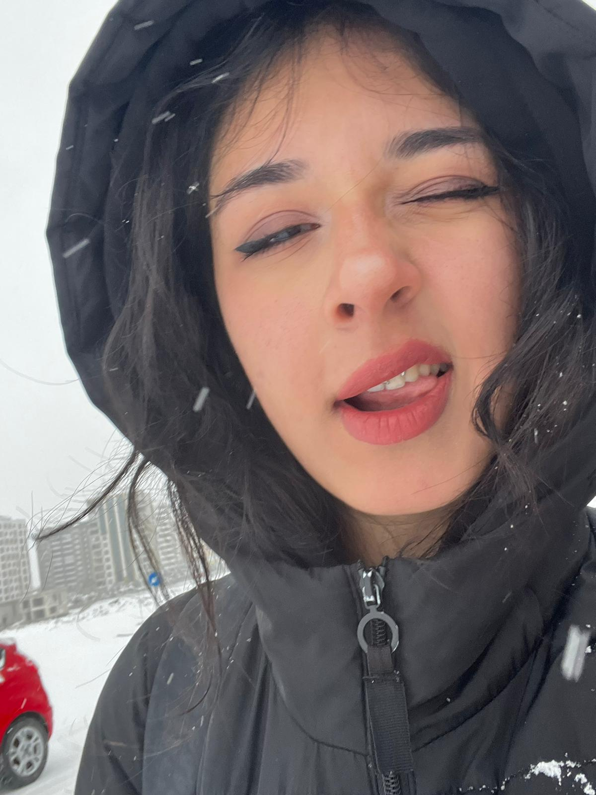
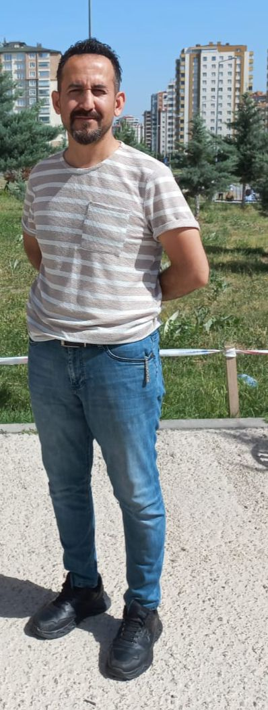
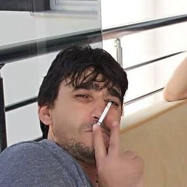
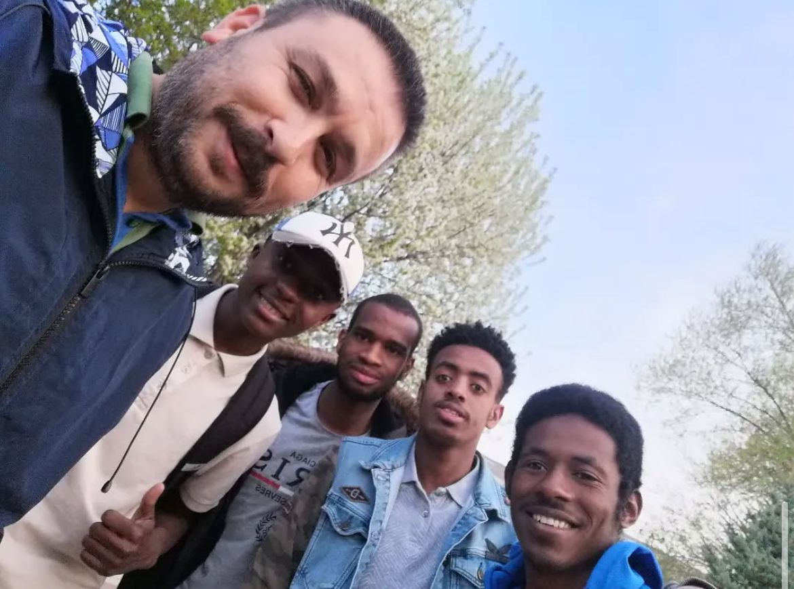
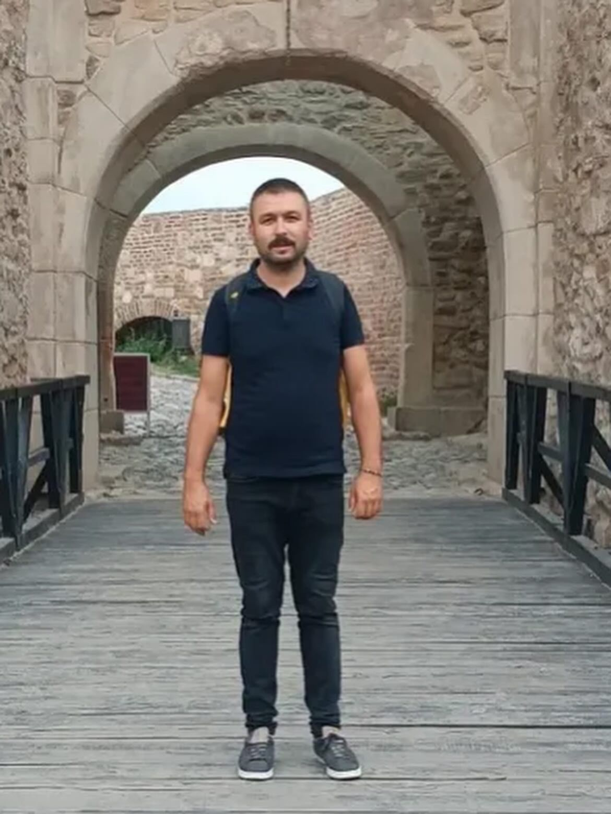
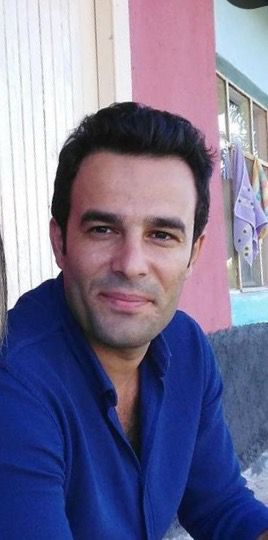
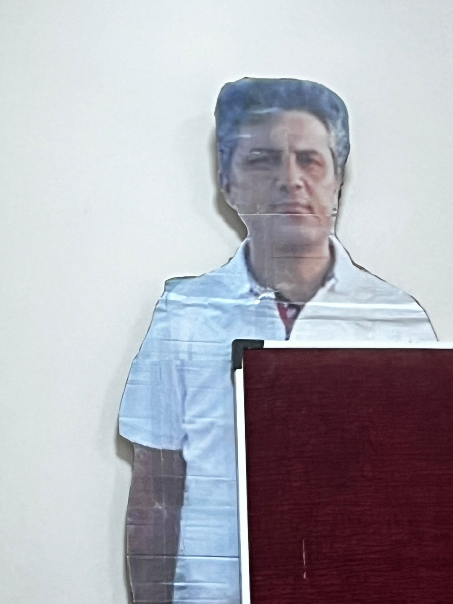
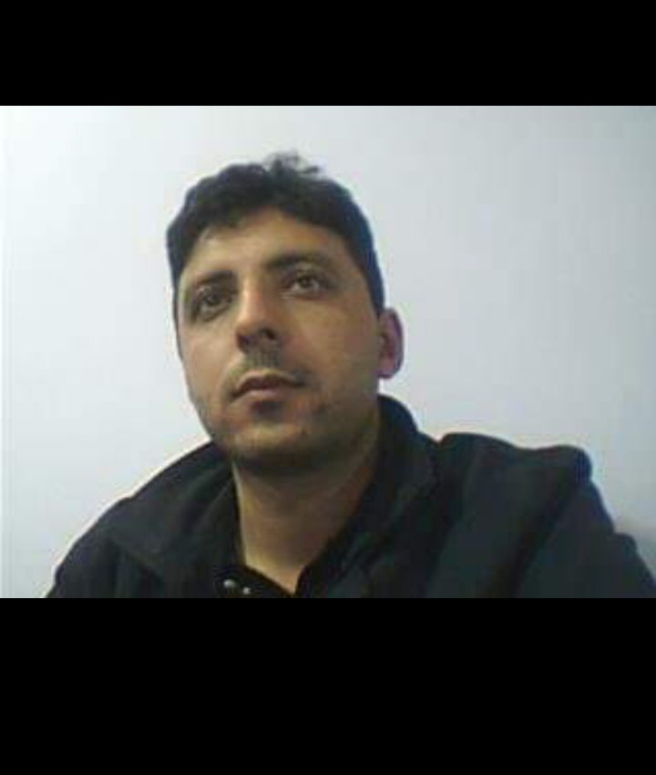
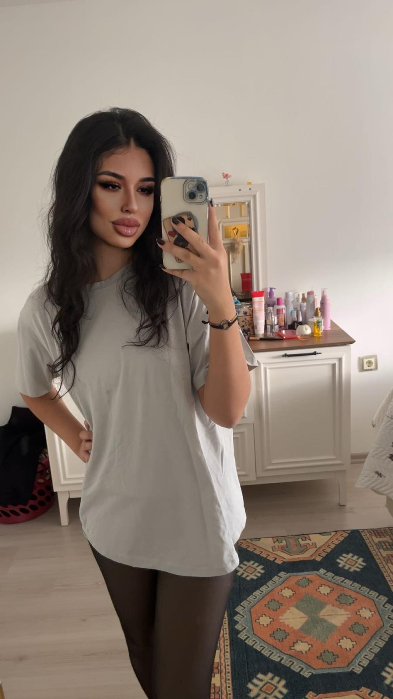

Ahmet Sönmez
Hepimizin bildiği SÖNMEZ hayatını doğa kolejinde istikrarla icra etmektedir.


Ahmet Sönmez
Hepimizin bildiği SÖNMEZ hayatını doğa kolejinde istikrarla icra etmektedir.
Murat Doğan
O ne Sezeryanla doğdu nede normal doğdu O sadece Doğdu O MURAT DOĞAN (Murat Doğanla Evlenicem)
Aykut CrazyBayır(RAKUN)
Bülbül Gibi Şakıyan Aykut Bey herzaman şarkılarıyla bizi büyüledi Özellikle "Dert defteri" Şarkısıyla gönüllerimize kazındı Babası Sevgi Apartmanındaki Doğan Delibayıra buradan kucak dolusu sevgilerimiz ile
Kantin Coşkun Coşkun
Okulumuzun kantincisi Coşkun Coşkun gönlünü Volkan hocaya kaptırmıştır kantin sırasında sizi duyması için almanca ifadeler kullanmanız yeterli

Kantinci Metin Abi
Kantinci Metin abi, işine gösterdiği titizlik ve adanmışlıkla adeta bir kral gibi etrafındakilere ilham veriyor. Her zaman bilgeliği ve kararlılığıyla bir imparator misali ortamı yönetiyor. Onun varlığı, hem dostluğu hem de liderliğiyle herkese güç ve güven aşılıyor.
Süleyman Dağtekin(Süloş)
Süloş Hoca asabiliği ve varlığıyla öne çıkan hocalarımızdan biridir. Kıl olmasına rağmen bakışlarıyla sınıfı tek bir göz hareketiyle disipline sokabilir. Onunla karşılaşmak, hem korkutucu hem de “vay be, işte hoca!” dedirten bir deneyimdir!


Mutlu Tekin (Nejat İşler)
Mutlu Hoca, tıpkı bir kral gibi sınıfta hüküm sürüyor. Her fırsatta “hep aptal sarısın” diye takılsa da aslında öğrencilerin aklını çelmekte usta bir imparator gibi. Onun yanında dersler hem komik hem de unutulmaz bir deneyim hâline geliyor!
Ayhan Karahan
Ayhan Hoca, okulun kapısından girdiği anda karizmasıyla sınıfı ele geçiriyor. Tarihi öyle bir anlatıyor ki öğrenciler adeta olayların içindeymiş gibi hissediyor, ama “not vericem” dediği hâlde vermemesiyle efsaneleşiyor. Onun yanında dersler sıkıcı değil, bizzat yaşanan ve unutulmaz bir serüven hâline geliyor!

Volkan Alay (Batman)
Volkan Hoca, biraz kasıntı olsa da sessiz karizmasıyla herkesin ilgisini çekiyor. Çok konuşkan olmasa da her kelimesi dersin ruhunu değiştirmeye yetiyor. Onun yanında edebiyat sadece okunmaz, hissedilir ve hafızalara kazınan bir deneyime dönüşüyor!

Atabey
Atabey Hoca, kanserle mücadele ettiği için aramızda olmasa da herkesin gönlünde ayrı bir yeri var. Kendisine en iyi dileklerimizi gönderiyor, yanında olamasak da sevgimizle destek oluyoruz. Tavuklara olan sevgisiyle de meşhur olan Atabey Hoca, dersleri ve hayatıyla unutulmaz bir Öğretmen

İsa Yalçınkaya (Taşaklı)
İsa Hoca, taşşaklı yapısıyla sınıfa girer girmez herkesin beynini tarayıp ufak ufak laf sokuyor ve alay etmeyi bir sanat hâline getirmiş. Ölsede derse gelir, üstün zekâsıyla adeta bir matematik imparatoru gibi herkesi şaşkına çeviriyor. Onun için denklemler sadece sayılar değil, zekâ testi ve komedi şovu karışımı bir aksiyon filmi gibi! İSA HOCAYI SEVMEYEN İSHAL OLSUN!
